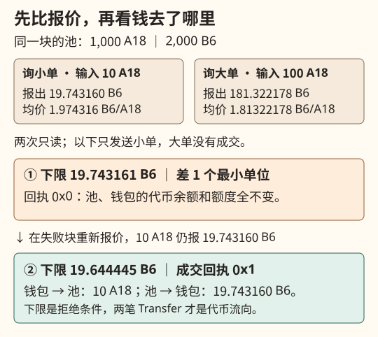

本页目录
可以标这张单的均价，不能记实收。 19.743160 ÷ 10 = 1.974316 B6/A18，保留四位小数是 1.9743。询价只是让程序按此刻库存算一次，没有提交兑换，钱包里的 B6 并没有因此增加。
不动库存和费率，只把询价输入改为 100 A18。能把小单乘十，显示 197.431600 B6 吗？这次程序报 181.322178 B6，均价约 1.8132 B6/A18。同一池子里，大单要拿走更多 B6，按池子的定价规则，平均每付一枚反而换得更少。两张报价都是估算，并非两次相继成交。
只想读懂报价，可以去第 24 课：价格过期时还能报健康度吗。以下选做本地实验，用两种没有价值的 LabToken 核对下限和实际成交。读整数用第 13 课的 ABI，认执行结果用第 17 课的回执，分辨额度和到账用第 22 课的授权判断。下文不使用真实资产或美元参考价。
一张账页：池子没有挂单人，靠什么算价？
把储备理解为池地址此刻持有的两种代币。我们只做一个方向：钱包付 A18，池给 B6。池子是自动做市商（AMM）：与钱包成交的是按规则行动的合约，不是等待确认订单的人。实验合约把两种可信代币的 balanceOf(pool) 直接当作储备。它既不读取外部价格，也不承诺未来还按本次价格卖。
设池里有 x 个 A18 最小单位和 y 个 B6 最小单位。先不收费，不做整数舍入：收到 dx，付出 dy，定价规则要求 (x + dx) × (y − dy) = x × y。于是 dy = y × dx / (x + dx)。为什么量大不按比例多给？把式子除以 dx：每单位输入换到的输出是 y / (x + dx)，输入越大，分母越大。初始储备是 1,000 A18 / 2,000 B6，以整币为单位计，原点附近的不含费边际汇率为 2 B6/A18。两千枚是库存，不是「每枚 A18 都能以 2 B6 成交」的承诺。


手算小单：先扣哪种费，最后舍掉哪一位？
本池的手续费率固定 30 个基点（30 bp，1 bp = 0.01%，故为 0.30%）。用户付足 dx，但只有 0.997 × dx 参与本次定价。这 0.30% 留在池里，并非另向钱包收取 B6，也不是用 ETH 支付的 gas。输入 10 A18 时，毛输入是 10，计价输入是 9.97，费对应 0.03 A18。
打开单向池合约的 quote。合约不做小数运算，下面是用原始整数复算的顺序：
x = 1000 × 10¹⁸ # A18 raw
y = 2000 × 10⁶ # B6 raw
dx = 10 × 10¹⁸ # A18 raw
withFee = dx × 997
Q = floor(withFee × y / (1000 × x + withFee)) # B6 raw
997 / 1000 同时留在分子和分母里，到最后才做一次整除；不要先把有效输入取整成 9 枚。数字缩写后，小单的 Q 等于 floor(9970 × 2,000,000,000 / 1,009,970)，得到 19,743,160 个 B6 最小单位。被舍掉的约 0.688 是不足一个最小单位，不是舍掉 0.688 枚 B6。最终展示除以 10⁶ 而非 10¹⁸；数据表里用整数，展示可以写 19.74316 或补足为 19.743160。
把 dx 换成 100 A18，但暂不成交。下面都是同一储备的计算预期，小数的单位不能省：
| 输入（A18） | 本次计价输入（A18） | 报价 Q（B6 raw） | 输出展示（B6） | 平均每付 1 A18 所得（B6/A18） |
|---|---|---|---|---|
| 10 | 9.97 | 19,743,160 | 19.743160 | 1.974316 |
| 100 | 99.7 | 181,322,178 | 181.322178 | 1.81322178 |
说「价格影响 9%」前请写清分母。若按不含费的初始边际价 2 比，100 枚单的平均汇率折让为 1 − 1.81322178 / 2 ≈ 9.3389%，里面已经包含手续费。若要隔开曲线造成的影响，就跟已扣费、尚无曲率影响的 2 × 0.997 = 1.994 B6/A18 比：小单折让约 0.9872%，大单约 9.0661%（均含末位整除的微小影响）。两种口径都不是用户填写的「滑点容忍」。转到 Java 时，三个原始金额及乘积用 BigInteger；不要为了求平均单价就把结算输入转为 double。展示用除法与真正决定 Q 的整除应分开。
用户填 0.50%，链上究竟检查什么？
报价 Q 是在某块用某个方向、输入和储备问得的结果；eth_call 没有锁住库存。价格影响已经在这份报价里。滑点容忍是用户愿意让执行结果比这份报价差多少；实际滑点需要等到成交，拿实际输出与下单参照的 Q 比。本例两笔交易之间没有其他换手，成功那笔应实收 Q，实际滑点为 0，但相对于初始边际价的价格影响并不为 0。
用户填「最多比报价少 0.50%」时，池子最后要比较的是最少给多少 B6，不是一个百分号。小单报价为 19,743,160 个 B6 最小单位，乘以 1 − 0.005，得到 19,644,444.2。池子不能付 0.2 个最小单位：如果只付 19,644,444，就比承诺还少了 0.2；所以满足承诺的最小整数是 19,644,445。客户端把这个整数作为 minOut 交给池。一般写法是 ceil(Q × 9950 / 10000)；有些接口约定向下取整，会差一个最小单位。这 50 bp 是用户的底线，不是池收的 30 bp 手续费，更不是钱包最后收到的数。
读 swap(amountIn, minOut) 的三步，顺序和账页有关：
- 以执行时的储备重算
amountOut = quote(amountIn)。没有「把前端算的输出原样发给用户」这一步。若amountOut == 0或小于minOut，立刻回滚。两者相等是允许成交的边界。 - 通过输入币的
transferFrom(msg.sender, address(this), amountIn)拉入全部毛输入。授权的 spender 是池地址，所需额度是 10 A18，不是扣费后的 9.97。接着输出币的transfer(msg.sender, amountOut)从池转给用户。这两次转移在同一笔交易中；本池检查两个布尔返回值，不能把返回false当作转账成功。 - 最后池才发
Swap(trader, amountIn, amountOut)。两种代币各自发自己的Transfer。外部交易发给池的value是 0 wei，不表示没有代币流动；回执顶层也不直接给出swap的返回值。要看代币日志和持仓变化。
在本地拿证：先发会失败的一笔，再重报小单
从仓库根目录、在 Bash 中运行。需要 Python 3.11 标准库和第 13 课工具：Forge / Cast / Anvil 1.7.1、solc 0.8.28。初次安装执行 bash labs/m04/setup.sh（仅下载并核验编译工具）；已安装不用重下。实验本身不联网，使用 Cancun、chain ID 31337 的一次性 Anvil，只绑定 127.0.0.1:18623。端口被占用就先停，不连接已有节点；不需要公共 RPC、浏览器钱包、私钥或助记词。
export PATH="${XDG_CACHE_HOME:-$HOME/.cache}/chain-course/m04/bin:$PATH"
export FOUNDRY_SOLC="$(command -v solc)"
unset ANVIL
WORK=$(mktemp -d)
set -o pipefail
python3 labs/m06/swap.py | tee "$WORK/s23.log"
驱动程序通过共享链工具建新链，结束时关闭。先读 run：用第一个解锁测试账户分别部署两份第 22 课的代币实现，A18 总量 1,100 枚、18 位小数；B6 总量 2,000 枚、6 位小数。再部署只认这两个地址的池，向池拨入 1,000 A18 和全部 B6，把余下的 100 A18 发给第二个账户（用户钱包）。钱包只在 A18 上批准本次下单额度。用输出的 PAIR 行把两个代币地址、池地址和钱包地址对应起来；下次运行这些地址和哈希不要求相同。
沿日志读四个检查点：
BASE/ 两行QUOTE。 取授权回执的块号为基准，同时保存块哈希。state()用同一块的五次只读查询拿到池两余额、钱包两余额、钱包对池的 A18 额度；quoted()把小单、大单的eth_call都固定到该块，用 Python 整数按储备复算返回值。大单即使只有 10 A18 额度也能得到报价：询价不检查钱包，不是可成交性证明。REJECT_RECEIPT。 在无其他写入时，刻意把小单的下限设成Q + 1 = 19,743,161个 B6 最小单位。共享发送器给显式 gas，使交易能上这条本地链，而不仅仅被 gas 预估挡下。保存这张原始回执：应有transactionHash、blockHash、status=0x0、空logs，且gasUsed > 0。state()再读失败块，五个读数应与基准完全相同。不换币不等于免费：脚本还把钱包原生 ETH 的减少额对上gasUsed × effectiveGasPrice（wei）。仅看状态位不能诊断任意交易；本课结合输入、未变的储备和已知合约检查顺序，才知道是哪道门槛挡下它。REQUEST fill/FILL_RECEIPT。 在失败块上重新报价，同样的 10 A18 应仍报 19,743,160。用这次报价计算下限 19,644,445，再发一笔。两张回执保留在同一条链上，无需删除一个分支。check_event()按「发出日志的合约地址 + 事件签名 topic」挑出每条证据，再逐字核对 indexed 地址与 data 里的整数。找到A18.Transfer(钱包→池, 10 × 10¹⁸)、B6.Transfer(池→钱包, 19,743,160)、池.Swap(钱包, 10 × 10¹⁸, 19,743,160)，才能与同块余额一起认定交换内容。额外的额度通知不是转账；不要简单按logs[0]或日志条数核销。- 最后一行
QUOTE。 成交块的储备已经变了。再询同样的 10 A18，预期 19,356,609 个 B6 最小单位。这是新价格，不是又发生一次成交；不要拿这次报价去解释前一笔的输出。若实验先成交再跑反例，必须重新报价或恢复同一储备，并保证有足够余额和额度，否则会把另一种失败硬说成越过下限。
默认输入下的对账预期如下。STATE_RAW 中 A18 是 10⁻¹⁸ 枚一格，B6 是 10⁻⁶ 枚一格；此表已换成整币展示，只在列名中标单位。图里写 0x0 与 0x1 是回执状态，不是执行了零笔或一笔报价。
| 观察时点 | 池 A18 | 池 B6 | 钱包 A18 | 钱包 B6 | 钱包给池的额度 A18 |
|---|---|---|---|---|---|
| 同块询价 | 1,000 | 2,000 | 100 | 0 | 10 |
| 下限多 1，回执失败 | 1,000 | 2,000 | 100 | 0 | 10 |
| 放宽下限，回执成功 | 1,010 | 1,980.256840 | 90 | 19.743160 | 0 |
对账时，池的输入增量是 10 而非 9.97。按整币单位，成交后的实际储备乘积 1010 × 1980.256840 = 2,000,059.4084 A18·B6，高于原来的 2,000,000 A18·B6。教科书里的「恒定乘积」用于定价；留池的费用及输出向下取整意味着实际储备乘积不减，不是必须严格相等。失败分支则连这笔代币乘积都没有改变。
为什么不能拿这几行当通用报价器？
本课是两份已知、无转账扣费、无回调的本地代币，单跳、单向、固定 30 bp，储备用合约当下的代币余额；直接给池转币会改变储备。没有 LP 份额、取回流动性、路由、截止时间或价格预言机，也没有通用资产的兼容与安全保证。不要将任何有价值的资产转给它。minOut 只能约束这笔调用的最低代币输出，不能证明报价公允，不能限制 ETH 执行费，也不能替代有效期或网络、地址检查。
Uniswap v2 的参考库里，quote 是按储备比例换算，getAmountOut 才是带费的单跳兑换输出；本课自行命名的 CoursePool.quote 对照的是后者，不表示实现了 Uniswap v2。到 v3，流动性提供者可以选择上下价格边界。比如两个头寸分别覆盖 [1.0, 1.2) 和 [1.1, 1.3) 的教学价格区间；价格在 1.15 时两份流动性都在区间内，在 1.25 时只剩第二份。这些数字仅用来区分谁生效，不代表本池或某个真实交易对。实际 v3 用 tick 表示边界；一次兑换可能跨越已初始化的 tick，使当前活跃流动性发生变化，需要分段推进价格、按该池费率结算。读出整个 v3 合约两种代币的总余额，不能代入本课的 x, y, 997 求输出。 接实际协议时先辨版本和价格单位，再用其官方报价机制，并明确参考块。
独立作业：审一张不同面额的下限申请
测试员提交 S-23B：输入 25 A18，钱包只批 25；仍用同一初始储备，仍承诺最多少收 50 bp。请先独立写下 Q、拒绝下限、允许下限、成交后五列账页。再从仓库根目录沿用上面的环境，运行：
python3 labs/m06/swap.py --trade-in 25 | tee "$WORK/s23b.log"
交付一份对照：基准块号与块哈希、同块两笔不同大小的报价、两笔提交各自的 minOut、交易哈希、回执状态，以及本轮能匹配的代币转移日志地址和金额。失败行还要说明花了多少 wei、为什么额度仍可用。对照原始 REJECT_RECEIPT 和 FILL_RECEIPT，不要拿第一轮的地址来解第二轮日志。
答案判据： 新小单 Q = 48,637,705 个 B6 最小单位；下限 48,637,706 失败，下限 48,394,517 可成交；大单没有改变，仍报 181,322,178。成功后，池持有 1,025 A18、1,951.362295 B6，钱包持有 75 A18、48.637705 B6，授权归零。若报表填的是 48.394517 B6，那是填写的下限，不是钱包收到的金额；指出哪一条 Transfer 与哪一个余额差能纠正它，才算过关。